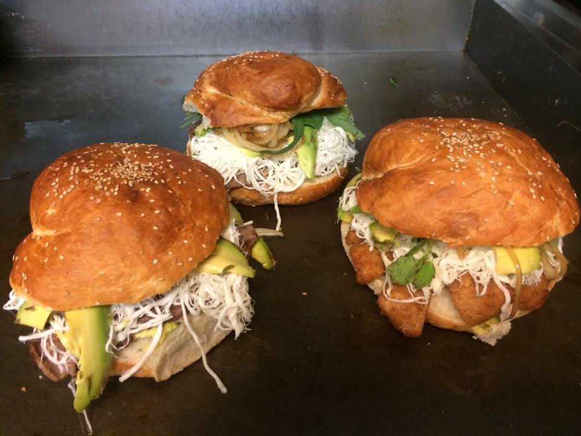
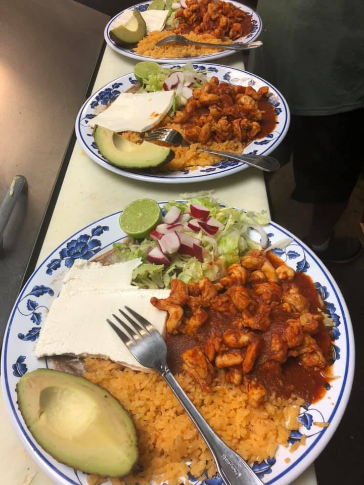
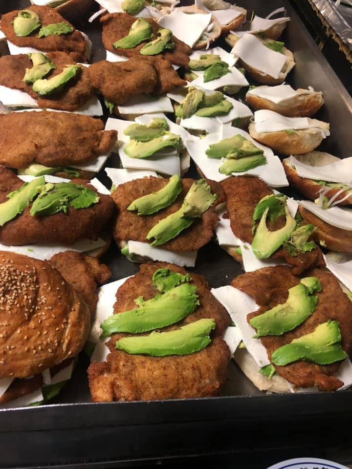

Here at Cemitas Poblanas we make some of the best puebla-based food in the city of Seattle!
From our massive Cemitas to our delicious tacos, Everything made at Cemitas Poblanas was made to be devoured
Cemitas Poblanas was founded in the year 2002, and ever since then our food is not only fresh but it is prepared to order!
that way we are guaranteed to give you the best quality of food as possible. Our Cemita bread is homemade every morning and every vegetable
is cut fresh!
Cemitas Poblanas
805 S. 112th St. Suite C, Seattle Wa 98168